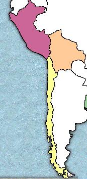
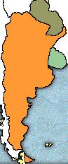
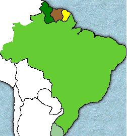
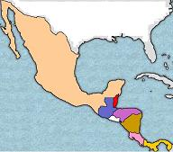
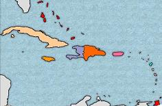

Regiones
América es un continente de grandes contrastes y las diferencias físicas, económicas y humanas permiten que en ella se hable de regiones. Si se toma como referencia el medio natural, puede hablarse de los territorios montañosos, tierras bajas; a su vez, la diversidad de paisajes, flora y fauna, puede caracterizar regiones diferentes.
Para el estudio de América Latina el concepto de
regionalización va a ser de gran importancia pues permite la comprensión de los
diferentes fenómenos naturales que inciden en un área geográfica y la
influencia que ejerce esta en las diversas actividades que desarrollan sus
habitantes.
Entendemos como región al resultado de la relación entre el
medio físico y la actividad humana. Son características comunes de una región:
un espacio delimitado por un paisaje que le sirve de marco; vínculos comunes
entre sus habitantes: lengua, religión, tradiciones, costumbres, y cultura, así
como una organización autónoma dentro de ella.
El estudio de América Latina se realiza por regiones. Ellas
son:
- Andes septentrionales, que corresponden a
Colombia, Ecuador y Venezuela.
- Andes meridionales, constituidos por Perú,
Bolivia y Chile.
- Región del Río de
- Región de las grandes cuencas del Amazonas y
Orinoco, que recorren los territorios del Brasil y Guayanas.
- Las Antillas; constituida por numerosas islas
que forman un conjunto relativamente homogéneo y se localizan en el Mar Caribe.
- México.y América Central.
Andes Septentrionales
 |
Esta región está conformada por Colombia, Ecuador y Venezuela. Su vecindad y los rasgos físicos comunes la hacen homogénea en muchos aspectos. |
Pisos térmicos.
La región septentrional de los Andes se caracteriza por las
precipitaciones recibidas durante el año, que pueden alcanzar un promedio de
A medida que se asciende unos
- Piso térmico cálido, de
- Piso térmico templado, de
- Piso térmico frío, de
- Piso térmico páramo, de
- Piso térmico nieves perpetuas, por encima de los
El límite de los cultivos aumenta a medida que se avanza
hacía los Andes secos y los cultivos en Ecuador pueden llegar hasta los
El páramo.
Los Andes septentrionales no reciben la influencia de las
estaciones, de ahí que sus condiciones climáticas no varían de forma notable.
El páramo es de gran interés en la geografía de los países ubicados en esta
región. Se caracteriza por la presencia de una niebla constante y temperaturas
medias inferiores a los
El ecosistema que se desarrolla en el páramo es único en su
género por las condiciones extremas que debe soportar. En los páramos se
originan las redes hidrográficas que riegan la mayor parte de esos territorios.
Los páramos ecuatorianos son una zona de transición entre los Andes húmedos y
los Andes secos y difieren de los del norte, con un paisaje menos vivo.
Tipos de clima.
Los tipos de clima que predominan en esta región son del tipo tropical lluvioso, bien con precipitaciones durante todo el año, o en los meses de junio, julio y agosto.
- De alta montaña. predomina en el lado oeste de la región.
- Seco estepario. Este se encuentra
en los valles profundos de los Andes y en el litoral ecuatoriano, debido a la
influencia de la corriente de Humboldt. Esta impide la formación de nubes sobre
el continente, pues las bajas temperaturas impiden la condensación del vapor
que es arrastrado por los vientos en dirección al océano.
Espinazo andino.
Los Andes constituyen la columna vertebral de América y se
habla por ello del "espinazo andino"; son una de las partes más inestables
geológicamente del continente americano. La actividad interna se manifiesta con
la presencia de volcanes activos y semiactivos al sur de Colombia y al norte de
Ecuador.
Los Andes en el Ecuador reciben el nombre de la sierra
formada por las cordilleras Oriental y Occidental que van paralelas. Son
notables las alturas del Chimborazo (
Continuando su recorrido, los Andes penetran en Colombia y
forman tres cordilleras:
Llanuras costeras y centrales.
Al oeste de los Andes se encuentra una prolongada llanura
que se extiende hasta el litoral del Pacífico. Esta llanura presenta en Ecuador
cambios fuertes en cuanto a clima y vegetación, pero continúa luego frente a la
costa colombiana sin mayores cambios.
El interior del territorio tiene extensas llanuras, surcadas por numerosos ríos. Algunas de ellas cubiertas por pastizales, como en Venezuela y al noreste de Colombia; otras, sostienen formaciones selváticas, como al sudeste de Colombia y al este del Ecuador.
«-- ir al comienzo
Andes meridionales
|  | Esta región está conformada por Perú, Bolivia y Chile. Bolivia y Perú fueron el centro de las culturas Tihuanaco e Inca. Chile participó en la influencia de estas culturas aunque no tan directamente. |
Montañas y llanuras.
Los Andes presentan en esta región grandes alturas,
principalmente en la parte comprendida entre los 13º y los 16º de latitud sur,
donde las montañas sobrepasan los 600m. Aún se encuentran volcanes activos y
estos territorios se ven frecuentemente afectados por movimientos telúricos de
gran intensidad, como los terremotos en Chile y Perú.
Los Andes a la altura del paralelo 7º sur, que atraviesa la
ciudad de Chiclayó, se dividen en cuatro ramales paralelos entre sí, separados
por importantes valles; como el valle del río Santa, que separa a la cordillera
Occidental. Esta cordillera se conoce como la cordillera Negra, por la
vegetación que la cubre. Paralela a ella está la cordillera Blanca, con cimas
que sobrepasan los
Los Andes bolivianos se prolongan en la cordillera Central y
La cordillera Real tiene numerosos volcanes como el Illimani
(
Hacia el sur, la cordillera andina se estrecha y forma una
reducida faja de tierra elevada, conocida con el nombre de la
"cordillera"; esta atraviesa longitudinalmente a Chile. Finalmente en
Puerto Montt pierde continuidad y se forman varias islas.
En la región existen llanuras interiores que son grandes
extensiones de tierra que cubren la parte oriental de Perú y Bolivia.
Tipos de clima
- En la costa peruana y en el norte de Chile se presenta un clima caracterizado por la alta evaporación y la escasez de lluvias. El desierto de Atacama se considera el lugar mas seco del planeta.
- La parte norte de esta región pertenece a la zona intertropical y no recibe gran influencia de las estaciones.
- El resto del territorio se encuentra en la zona templada del sur, donde se presentan las estaciones.
En este sector de los Andes no se presentan los pisos
térmicos propios de los Andes húmedos septentrionales, sino el clima de las
nieves perpetuas: sin vegetación. Esto es propio de las alturas superiores a
los
Litorales.
La costa de la región de los Andes meridionales, que se
inicia frente a la frontera con Ecuador, es una faja de tierra comprendida
entre el océano Pacífico y la cordillera Andina. La parte correspondiente al
Perú es baja, su anchura varía entre los 50 y
La costa árida se prolonga hasta Chile. En este país se distingue el oasis de Atacama, formado por el río Copiapó. La costa chilena es uniforme y los accidentes son relativamente escasos. Mas al sur se encuentran numeroso fiordos y multitud de islas que penetran en el Antártico.
«-- ir al comienzo
Región del Río de la Plata
|  | La región del río de |
El estuario del río de la Plata.
El estuario del río de
El Chaco.
"Chaco" es un vocablo quechua que significa
"país de cacería". El Chaco es una extensa llanura que cubre
territorio paraguayo y argentino. No presenta grandes alturas y se localiza al
noroeste de la región. Los suelos son aluviales profundos: están constituidos
por materias arrastradas por las corrientes que bajan de los Andes y la
influencia de los ríos Paraguay y Paraná
La Pampa.
Hacia el centro de la región hay una planicie muy amplia y
fértil que se extiende desde el piedemonte andino hasta el litoral Atlántico y
por el sur hasta el paralelo 40º. Esta vasta llanura sólo es interrumpida por
las sierras de Córdoba y las de Tandil y Ventanas. El sector se conoce con el
nombre de "pampa", que según los indígenas significa "llanura
sin árboles". Los suelos se han formado por acumulación de materias
arrastradas por las corrientes fluviales.
La
Patagonia.
En la parte meridional de Argentina se localiza
Cordón montañoso.
El cordón montañoso de la región se encuentra al oeste, en territorio argentino, lleva una dirección de sur a norte y está coronado por volcanes de gran altura.
En esta región pueden distinguirse tres sectores
andinos:
- Al noroeste, los Andes se amplían como extensión del
altiplano boliviano y alcanzan alturas de
- Los Andes centrales, donde se localiza la mayor altura de
América: el Aconcagua (
- Los Andes del sur, cubiertos por mantos de hielo, con una
erosión muy activa de tipo glacial y donde la altura va disminuyendo hasta
llegar a los
Climas.
La región se encuentra al sur del Trópico de Capricornio, en
la zona de latitudes medias, en donde se presenta un clima templado lluvioso
que se ve afectado por distintos factores como vientos, corrientes marinas y
grandes alturas.
En la pampa los inviernos no son rigurosos, en cambio los
veranos son fuertes y muy calurosos. En Argentina se distingue una zona de
pampa húmeda, al este de Córdoba y Bahía Blanca. El resto de la pampa tiene un
clima templado mucho más seco hacía el oeste, aunque sus estaciones no son muy
marcadas.
«-- ir al comienzo
Región de las grandes cuencas
|  |
La región de las grandes cuencas está formada por Guayanas,
Surinam y Brasil, su territorio está surcado por los grandes ríos Orinoco,
Amazonas y sus afluentes. |
La selva ecuatorial, con 5 200 000 km², cubre parte del territorio de las Guayanas y Brasil. La cuenca del Amazonas es la más grande reserva de recursos de nuestro planeta.
Macizos montañosos.
Los macizos montañosos, formados por rocas duras que han
aflorado como consecuencia de la intensa erosión hídrica, son característicos
de esta región. Las formas más altas han sido rebajadas hasta formar planicies
de escasa altura.
En las Guayanas, el macizo está separado del océano por una
llanura costera compuesta por los sedimentos arrastrados por los ríos.
El paisaje de la región está caracterizado por mesetas que
forman:
- El macizo guyanés al nordeste de Suramérica.
- Las mesetas del macizo brasileño en el sudeste del
continente.
Encerrada por estas mesetas se encuentra la depresión del
Amazonas y al oeste del macizo guyanés se encuentra la llanura del Orinoco.
Litorales.
La costa de las Guayanas es amplia hacia el oeste; luego se
estrecha al centro, para ampliarse
nuevamente frente al límite con Brasil. La costa es arenosa y su
vegetación la forman los manglares.
El litoral brasileño no presenta accidentes notables. Esta
parte de la región se desgasta fácilmente pues los materiales no están
cimentados y pueden ser arrastrados con facilidad.
Cuenca del Orinoco.
El Orinoco nace en el macizo guyanés y luego recorre el
territorio venezolano. La cuenca del Orinoco es de 662 000 km² y lleva sus
aguas al Atlántico. Esta cuenca se comunica con la del Amazonas por medio del
canal, o brazo del Casiquiare, río venezolano que une al Orinoco con el río Negro,
afluente del Amazonas.
Cuenca del Amazonas.
El Amazonas recorre unos 6 millones de km² y recibe más de
1000 afluentes directos y otros indirectos. Los principales afluentes son el
Madera, con
Los suelos del Amazonas se originan por la descomposición de
los materiales que forman las rocas. Las precipitaciones lavan estos suelos y
arrastran los nutrientes que los componen. Son suelos ácidos que sólo pueden
sostener al bosque.
La cuenca del Amazonas representa un caudal de riqueza mineral,
vegetal y animal, pero el hombre ha atentado contra este paisaje, utilizando un
sistema de cosecha basado en desmontar la selva. Los árboles se talan y se
abren terrenos para sembrar, los suelos sin protección se agotan rápidamente.
Climas.
La región de las grandes cuencas está ubicada en la zona de
latitudes bajas y le corresponde un clima tropical lluvioso, caracterizado por
las altas temperaturas y precipitaciones abundantes.
En el extremo nordeste las condiciones climáticas se ven afectadas por la cercanía del mar.
«-- ir al comienzo
México y América Central
|  |
América Central es la unión de dos grandes masas de tierra:
América del Norte y América del Sur. América Central se caracteriza por sus lagos y volcanes. |
México fue cuna de los aztecas. Ellos entendieron que la
tierra es la madre generosa que nos da frutos, alimentos y agua, o el monstruo
hambriento que devora todo y trae desolación y muerte. Los aztecas creían que
cada 52 años, la duración de un siglo azteca, la vida tenía que renovarse, el
fuego nuevo encenderse y la madre tierra besarse para evitar catástrofes.
El mar cubrió la tierra de México durante millones años,
dando lugar a un gran proceso de sedimentación. El territorio mexicano emergió
en diferentes eras geológicas:
- Al norte las rocas más antiguas de la era Primaria.
-
-
México está atravesado por dos sistemas montañosos: Sierra
madre Occidental y Sierra Madre Oriental. La primera se caracteriza por una
menor actividad volcánica. Entre ambas sierras está la meseta central, con su
mayor altura (
La parte más volcánica de la región tiene una longitud de
América Central.
América Central es un paisaje de lagos y volcanes con
montañas jóvenes de origen volcánico y alturas superiores a los
El istmo centroamericano se extiende a lo largo de
Los Andes forman mesetas rodeadas por altas montañas, como
en El Salvador. Un ramal de los Andes penetra en Honduras.
La cordillera de los Andes entra a Nicaragua y la recorre de
noroeste a sudeste, en esta zona forma una depresión donde se localizan los
lagos de Managua y Nicaragua.
Los Andes siguen su curso y entran en territorio
costarricense, en el norte toman el nombre de cordillera de Guanacaste y
continúa con el nombre de cordillera central. Allí se encuentran alturas como
el cerro Chirripó (
El cordón montañoso prosigue hacia el sudoeste y pasa por
Panamá. Aquí sólo existe un volcán activo: el Chiriquí, con una altura de
«-- ir al comienzo.
Las Antillas
|  |
Las Antillas pueden dividirse en tres partes:
|
Según Alejo Carpentier, la historia de las tierras del
Caribe está jalonada de erupciones volcánicas, sismos y ciclones.
La cólera del dios de los vientos del Caribe -Hurakán- ha
devastado en diferentes épocas las islas.
El clima atractivo y fascinante, la calidez de sus gentes, la mezcla y fusión de diferentes culturas conforman un mosaico variado y único.
Formación.
Los indicios geológicos apuntan a que en un tiempo remoto
las islas formaron una unidad con los sistemas montañosos de Sur América,
Guatemala y Honduras. La inestabilidad de la corteza originó muchas
fragmentaciones. El plegamiento antillano se halla cortado por una serie de
fallas que han originado en el relieve submarino dos grandes líneas de fallas:
- La que atraviesa longitudinalmente la plataforma cubana y
- La que corre a lo largo del litoral norte entre Haití y
Puerto Rico, con las profundidades de la fosa de Brownson, o de Puerto Rico, la
mayor profundidad en todo el océano Atlántico.
El vulcanismo ha desempeñado un importante papel en la
transformación de la región y la isla de Martinica sufrió una de las erupciones
más violentas del siglo.
Suelos antillanos.
En los terrenos antillanos se pueden diferenciar dos tipos
de suelo:
- Los formados por la mezcla de materiales lanzados por
erupciones volcánicas y sedimentos arrastrados por las corrientes que son
fértiles y apropiados para labores agrícolas.
- Los formados sólo por la acumulación de sedimentos a través
de los tiempos sobre los cuales descansan capas de calizas que hoy constituyen
su fundamento.
Las aguas subterráneas pueden alterar las propiedades de las
calizas y formar cavidades donde se acumulan minerales diversos. Las calizas
modelan el relieve al presentar una forma de erosión que origina las cavernas,
cuando las rocas se disuelven por las abundantes lluvias tropicales. En este
tipo de paisajes brotan manantiales de aguas medicinales y termales que
predominan en las Antillas Mayores y constituyen un gran atractivo turístico.
Climas.
El clima antillano se caracteriza por un período de lluvia
que se inicia en mayo y continúa hasta noviembre. Los vientos se presentan en
forma constante; los alisios soplan por del nordeste y refrescan el ambiente.
En las regiones montañosas, al descender los vientos, estos pueden aumentar su
temperatura y se transforman en vientos secos, como sucede al sur de Puerto
Rico.
Todos estos fenómenos originan varios tipos de clima de
carácter local.
«-- ir al comienzo
«-- regresar